Datasets
To create this map we will be using the following datasets for analysis:
American Community Survey - Age & Sex (B01001). Download from the U.S. Census Bureau FactFinder site. When you get to the Advanced Search page in FactFinder, filter 'Geographic Type' to
Block Group - 150, StateNew York, and all Block Groups for CountiesBronx, Kings, New York, Queens, and Richmond. Then filter by 'Topic', and selectAgefollowed byAge & Sex. This will provide you with a list of datasets. Select datasetB01001from the 2015 ACS 5-year survey. A pre-packaged and edited version of this dataset can be found here.Hurricane Evacuation Zones - representing varying threat levels of coastal flooding resulting from storm surge. Download from NYC OpenData. Once you get to the NYC OpenData page, click
Exportand choose theShapefileformat. A brief note about this dataset from NYC OpenData: "Hurricane evacuation zones should not be confused with flood insurance risk zones, which are designated by FEMA and available in the form of Flood Insurance Rate Maps (FIRMs)."Census Block Groups - New York State census block groups. Download from U.S. Census Bureau - Tiger/Line Shapefiles. Select
2017andBlock Groups, and clickSubmit. Then, selectNew Yorkas the state and clickDownload.
And the following datasets for styling and presentation:
Boroughs - New York City boroughs. Download from NYC Planning - Open Data. Choose "Borough Boundaries (Clipped to Shoreline)", under "Borough Boundaries & Community Districts".
Hydrography - New York City hydrography. Download from NYC OpenData. Once you get to the NYC OpenData page, click
Exportand choose theShapefileformat.Hydrography U.S. - United States hydrography. Download from the Bureau of Transportation Statistics. When you get to the Bureau of Transportation Statistics page click on the Hydrographic Features
ZIPfile.States - U.S. State Boundaries. Download from the Bureau of Transportation Statistics. When you get to the Bureau of Transportation Statistics page click on the U.S. State Boundaries
ZIPfile.
A packaged file with the census and block group data can be found here.
About the Census
For the U.S., census data is used as a key dataset in understanding the health and progress of our society. It provides metrics about our society and is used to normalize other data for identifying and measuring issues in our economy, environment, and society. This tutorial will explain the proper method for querying and downloading census data; preparing the data for qGIS; and joining, analyzing, and styling the data.
For reference, the U.S. Census has two main surveys, the Decennial Census and the American Community Survey. The Decennial Census is the major census survey, which is carried out every 10 years and attemps to count every person in the country. It has two major disadvantages: one, it only happens every 10 years, so for the years in between the last census might be too outdated and the next one too far away; and two, because it is not using any sampling techniques, it often under-represents minorities.
The second main survey is called the American Community Survey (ACS) and happens continuously. Its questionnaire is sent to 295,000 addresses monthly and it gathers data on topics such as ancestry, educational attainment, income, language proficiency, migration, disability, employment, and housing characteristics. Its results come in 3 forms: 1-year estimates, 3-year estimates and 5-year estimates. The 1-year estimates are the most current but the least reliable. On the contrary, the 5-year estimates are not as current but are much more reliable. F
Downloading Census Data
The first step will be to download the 'empty' geography files for our unit of analysis (by 'empty' I mean without any census attributes, apart from unique identifiers). However, before doing this we should actually decide what unit of analysis we will use.
The American Community Survey, which is the statistical survey we will be using, provides data at multiple geographic levels, all the way from the whole country to the block group (which in Manhattan can be anywhere between 1 and 4 city blocks). Some of the other geographic units of analysis include regions, states, counties and metropolitan statistical areas. However, not all the data comes at every geographical level, so in general, we will try to find the smallest unit of analysis available for our dataset. In our case, that will be the block group level.
Because our data is available at the block group level, we will download TIGER/Line Shapefiles for that geographical level. Download at U.S. Census Bureau - Tiger/Line Shapefiles. Select 2017 and Block Groups, and click Submit. Then, select New York as the state and click Download.
Now we will fetch our data for analysis. Since we will be building a map to find the amount of our population that is both vulnerable (17 & Under AND 65 & older), we will need to find a dataset at the block group level that has age and population. We will need to download this for all New York City counties.
Once you are on the American FactFinder website, click on the
ADVANCED SEARCHtab. Here we will search for the data at multiple levels:Geography: block groups (150) for New York City counties
Dataset: American Community Survey (ACS) 2015 5-year estimates
Topic: Age & Sex: Age
This set of criteria will quickly produce the Sex by Age dataset (B01001), which we will download and alter prior to importing into QGIS. Your final filter should should look like this:
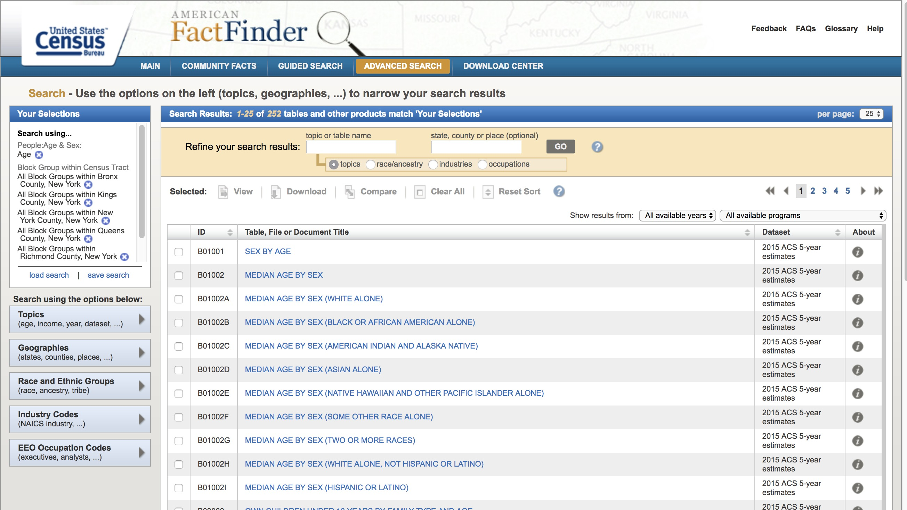
Prepping Census Data for QGIS
In order to bring this census data into QGIS we need to re-format the table, so that it is correctly read by the program and we can join it to its geographic boundaries. This is a two step process: first, we will format the actual table in Excel, Google Spreadsheet or a simple text editor and, second, we will create a .csvt file, which will tell QGIS the exact format for each of the fields in the table.
Again, as with many things GIS, there are multiple ways of formatting the data. In our case we could do it using Excel, Google Documents (Spreadsheet) or even a simple text editor. Here, though, I will show you how to do it through Excel. If you know how to do it in Excel you should be able to figure out how to re-format the data using a Google Docs Spreadsheet.
The great advantage of using Excel (or Google Docs) is that if you need to, you can add and calculate new fields into your data; for example, in our case, you would be able to calculate the total count of vulnerable children and elderly and add that as a field (you could also do that inside QGIS). However, if you were to do that in a text editor, you would need to manually calculate the value for every single row. On the other hand, doing the re-formating through a simple text editor means that you can control the format of the data much more and that you won't have any problems with Excel auto-converting your data into other types, for example, from text into numbers or vice versa.
Another great advantage of using Excel or Google Docs is that if you need to delete multiple fields (for example, all the margin of error fields), you can easily do it. Doing it in the text editor would be a nightmare. That being said, there are options, when downloading the data from American FactFinder, to not get the margin of error fields.
Re-formating data in Excel:
First, open a new file in Excel.
Once you've opened it, click on
File,Open...and navigate to the folder where you saved your downloaded census tables.Make sure you are able to open
All Filesnot justAll Readable Files. In my Mac, that option is calledEnableand in Windows you should select the optionAll Files (*.*)instead ofAll Excel Files (...).Once you've done this you will be able to select the file called 'ACS_15_5YR_B01001_with_ann' and open it. It should look something like this:
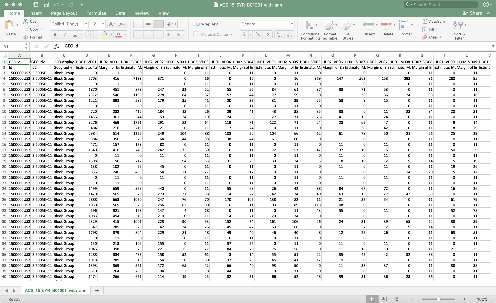
What we need to do now is two things: One, to rename the field names (header) and get rid of the second row, which is also a kind of header. And two, delete all the margin of error fields since we are not going to use them.
In terms of renaming the fields, QGIS is particular about field names. To avoid problems, limit your titles to: maximum 8 characters, no spaces, no weird characters and start with a letter, not a number.
First, delete all the margin of error columns. Just right-click on the column and say
Delete.Next, we will create a new column for Vulnerable Populations which will be the sum of all columns comprised of Females 17 and under or 65 and older, and males with the same characteristics. After calculating the sum, you can delete all other columns.
Now, rename the fields in the following way:
GeoID
GeoID2
GeoDesc
TotPop
VulPop
The names don't necessarily need to be like these ones. There's no standard way of naming these fields. The only thing I would recommend is to name them as close as possible to something you can actually read, so that you and the other people who use these files can easily understand what they mean. In the end, that is what metadata is there for, to tell you exactly what each of the fields means.
Once you've renamed your fields, delete the second row. Now you are left with only one header field and the actual data.
Finally, save your file as a .csv file. If you are on a Mac, make sure you save your file as
Windows Comma Separated (.csv). There seems to be a problem with the line endings when you save it as the default .csv format. I am saving my file asB01001.csv. It looks like the following:
Creating the .csvt file:
After exporting your CSV, you will need to create a .csvt file. This file will tell QGIS exactly what type of data each of the fields is in. The different types of data your fields can take are:
String - Represents text
Integer - Represents whole numbers
Real - Represents both negative and positive numbers, with decimal points
Date - Date in the format YYYY-MM-DD
Time - Time in the format HH:MM:SS+nn
DateTime - Date and time in the format YYYY-MM-DD HH:MM:SS+nn
In your text editor, open a new file.
Now, for every field, write the type of data it takes in quotation marks. So, for the Excel file, where we don't have the margin of error fields you would write:
"String","String","String","Integer","Integer"Note that every item is separated by a comma and that the first three fields, even though they seem like they are numbers, are actually text fields. This is very important, since we are going to use those fields to join our census table to the census boundaries, which also contain those fields as text. If we have one file with text and another with integers or real numbers, the program won't be able to match it.If you are working on Mac's TextEdit you need to format your file as 'Plain Text'. To do this click on
Formatand thenMake Plain Text. This will change your file from an .rtf to a simple .txt.Save your file with the same name as the table but with a different extension. It is important to do this so that QGIS understands that this .csvt file corresponds to the other .csv or .txt file. In both Windows Notepad and in Mac TextEdit you need to manually type the extension (.csvt) and in TextEdit you need to un-check the option that says 'If no extension is provided, use .txt'.
If you are using the table we modified with Excel your .csvt file would be named
B01001.csvtIf you were using the table we modified with TextEdit or Notepad you would name your file
B01001_Text_Edit.csvtYour final file should look something like this:
So, for every column we need to specify what type the data is in.
Now that the files are ready we can move into QGIS and bring everything together. A packaged version of this csv/csvt can be found here.
Importing Data to QGIS
First, open a new map in QGIS and add the following layers (links at the beginning of this tutorial). Remember to add the boroughs first so that the map takes on the right projection.
Boroughs
Hurricane Evacuation Zones
TIGER/Line Block Groups
Organize your layers so that you have the hurricane evacuation zones on top, then TIGER/Line Block Groups, then boroughs. For now you can turn off the Boroughs layer.
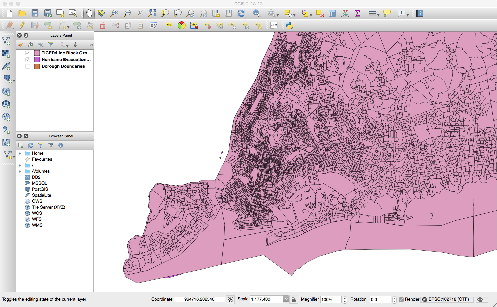
Next you will import your cleaned ACS dataset. To do so, click on
Add Deliminated Tex Layer(Represented by a comma icon).In the menu that comes up, look for your .csv (B01001) file. Once you've selected your file QGIS will automatically select some presets. You should have the following options selected:
File format:
CSV (comma separated values)- this is the format our data is in: each value is separated by a comma.Record options:
First record has field names- the first row of our file contains the field names.Geometry definition:
No Geometry- our data has latitude and longitude data.Your menu should look something like this:
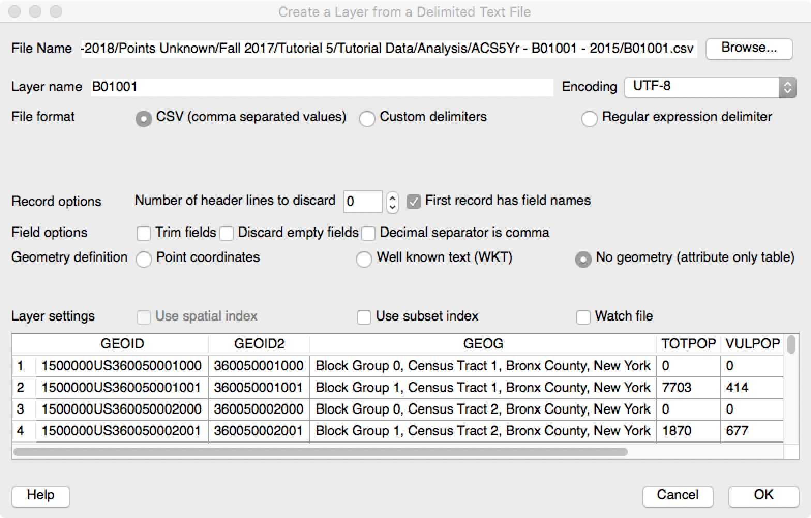
Now that we have our layers loaded, we need to join our census data
Your prompt window should look similar to this:B01001to the block group geometryTIGER/Line Block Groups. To do so, right click on yourTIGER/Line Block Groupsand clickProperties. On the left column, select theJoinstab. Here, click the+ Signand a prompt will appear. For the join layer, selectB01001, as that's the block group data we're trying to join to the block group geometry. The Join layer isGEOID2, as that shares the same geography identifier as theTIGER/Line Block Groups - GEOIDidentifier. Therefore, selectGEOIDas ourTarget Field. Next, select the two fields we would like to add to the geometry datasetTotPopandVulPop. Lastly, selectCustom field name prefixand delete the text.
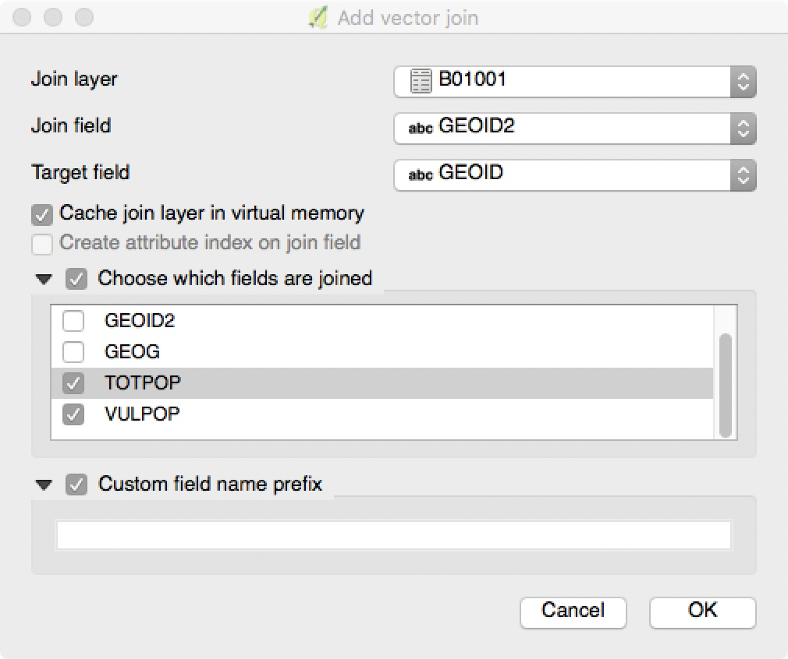
After joining any dataset, the first thing you should do is check the attribute table of the recipient dataset (TIGER/Line Block Groups) and make sure you see the new columns.
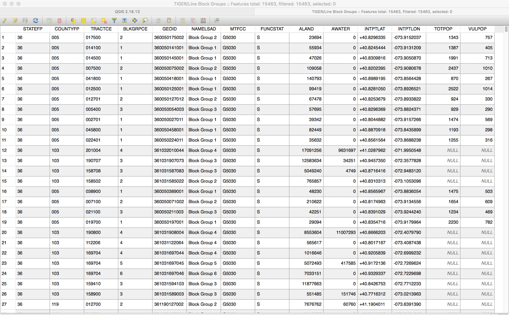
The join was successful, but in looking at the attribute table, we see that the TIGER/Line Block Groups includes counties outside of New York City. Let's filter those out by adding the following county feature filter expression (
"COUNTYFP" = '005' OR "COUNTYFP" = '047' OR "COUNTYFP" = '061' OR "COUNTYFP" = '081' OR "COUNTYFP" = '085') to theTIGER/Line Block Groupsdataset.Before moving on, let's save this dataset as a shapefile with the NAD 1983
EPSG:102718projection.Now you should have all the records that have latitude and longitude selected and we can proceed to export them as a shapefile.
Close the attribute table, right-click on the TIGER/Line Block Groups layer and select
Save As...In the following menu choose:
Format:
ESRI Shapefile- this is the same format of our other layers.Save as: choose the appropriate location and name for your file.
CRS:
EPSG:102718 - NAD_1983_StatePlane_New_York_Long_Island_FIPS_3104_Feet- this is the coordinate system we are working with and we want this layer to have the same one.Check
Add saved file to map- so that once you export the layer, the layer is added to your map.Once you export your layer (and it's automatically added to your map) you can group your old layer and uncheck it to hide it from the presentaiton
Now, we are ready to run analysis against the hurricane evacuation zones.
Geoprocessing
Using styling can be a good way to double check your work throughout the data analysis/manipulation process. Because we will be running geospatial analysis against the hurricane evacuation zone layer, let's first save the layer in the proper projection CRS:
EPSG:102718 - NAD_1983_StatePlane_New_York_Long_Island_FIPS_3104_Feetand turn off the old hurricane evacuation zone. Now, style the evacuation zone dataset like we did in the first tutorial.
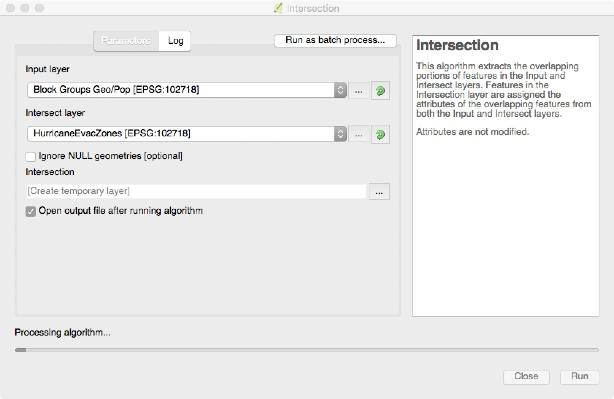
Now, we want to find the block groups that are within the Hurricane Evacuation Zones so that we can count the amount of vulnerable population within each zone. Unfortunately, blcok group geometry doesn't neatly split at the hurricane evacuation zone--some block groups can span upwards of 5 evacuation zones. Therefore, we will want to find the proportion of area that each evacuation zone spans within a block group. We will then multiply that proportion by vulnerable population to estimate vulnerable population by zone. Note that this is not perfect. If we wanted to be more exact, we would take the PLUTO dataset and apply our population to residential area, as opposed to block group area. If you do this on your own, be sure to determine which group a building is located in by its centroid.
The first thing we want to is filter out any block group without population so that we don't slow down future analysis. To do so, apply the following expression
"VULPOP" != 0to the Block Group layer. If we were running analysis on the total population within zones, we would filter out the total population field. For the purposes of this tutorial, I've only selected the Vulnerable Population (< 18 AND ≥ 65).Next, we want to add a field to the Block Group dataset that indicates the area of the block group. To do so, go into the attribute table for that layer, and select the
Toggle Editing ModeButton. Then, click theOpen Field Calculatorbutton and enter the following expression$area. This will create a new field with area for each block group. We will title this TOTAREA. Since this is in theEPSG:102718, area is measured in square feet.Now, we need to run spatial analysis to determine overlaps in hurricane evacuation zones on the block groups layer. To do so, go to your menu tab and select
Vector>Geoprocessing Tools>Intersection. For the Input Layer, select the 'Block Groups' dataset. For the intersect layer, select the 'Hurricane Evacuation Zones' layer. This is a good opportunity to make sure your projections are the same. This is important when performing geoprocessing analysis for most cases. This analysis is a slow process, so attached is the outputted shapefile.
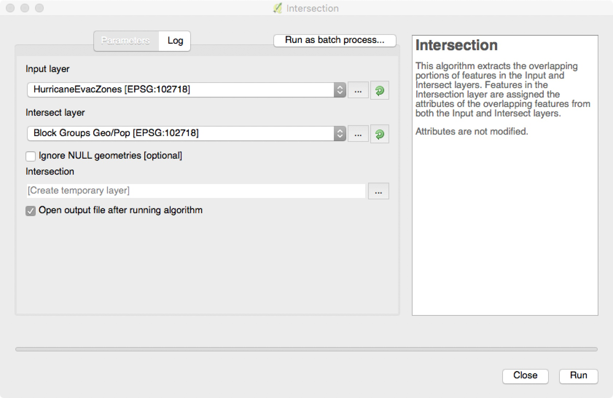
Next, we want to find out the proportion of area of cencus blocks that intersect with hurricane evacuation zones.Similar to the field calculator we applied to the Block Group dataset, let's now perform that same field analysis to the newly generated dataset.
First, make your Attribute Table editable.
Next, add a field using the field calculator for $area and title it NEWAREA.
In addition, we want to find proportion so that we can measure our population across a census block group. To do so, divide new area by total area. This can be expressed as
"NEWAREA" / "TOTAREA". When running this calculation set theOutput field typeto 'Decimal Number (Real)', theOutput field lengthto 5 and thePrecisionto 4.Last, multiply new area by vulnerable population. This can be expressed as
"PROP" * "VULPOP". For this calculation, set theOutput field typeto 'Decimal Number (Real)', leave theOutput field lengthat 10 and thePrecisionto 2. This will prevent the proportion and vulnerability calculations to reset to whole numbers on save. For proportion, this is particularily important.As a quick check to make sure your geoprocessing worked, make the border of your new boundaries a dotted line and turn the transparency to 50%. When you zoom in, you should be able to see the old Block Group boundaries, as well as the new flood zone boundaries.
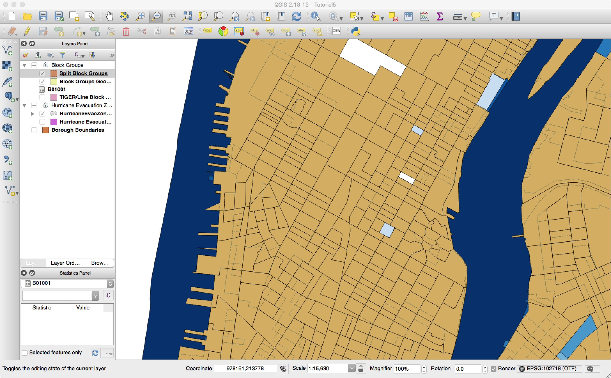
Styling & Analyzing
To begin styling, recreate the map generated in the first tutorial, excluding the PLUTO datasets.
Next, turn back on your old Block Group dataset that has block groups geography and population. In your 'Style' Properties, set the
Fillto 'No Brush' andTransparencyto 50%.Next, let's style the new Vulnerable Population dataset. Like the Hurricane Evacuation Zones, set the Style type to graduated, mode to 'Natural Breaks - Jenks' and clean the classification to the following breaks:
0-174
175-450
450-875
875+
It is important to understand that there are a variety of modes to make breaks in the classification of data.
Equal Interval classification: In this mode, the width of each class is set to be the same. For example, if input values ranged between 1 and 100 and four classes were desired, then the class ranges would be 1-25, 26-50, 51-76, and 76-100 so that there are 25 values in each class.
Quantile (Equal Count): In this mode, the number of records in each class is distributed as equally as possible, with lower classes being overloaded with the remaining records if a perfectly equal distribution is not possible. For example, if there are fourteen records and three classes, then the lowest two classes would contain five records each and the highest class would contain four classes.
Natural Breaks (Jenks): The Jenks Breaks method maximizes homogeneity within classes and creates class breaks that are based on natural data trends.
Standard Deviation: In this mode, classes represent standard deviations above and below the mean record vlues. Based on how many classes are selected, the number of standard deviations in each class will change.
Pretty: This creates class boundaries that are round numbers to make it easier for humans to delineate classes.
Last, apply a filter so that we are only seeing values for populations within hurricane evacuation zones 1-3. Now you will have a styled map that highlights vulnerable population in hurricane evacuation zones 1-3. For purposes of highlighting at risk areas, let's only display vulnerable populations above 175 people. This can be done by simply turning off the first category of classification the layers tab.
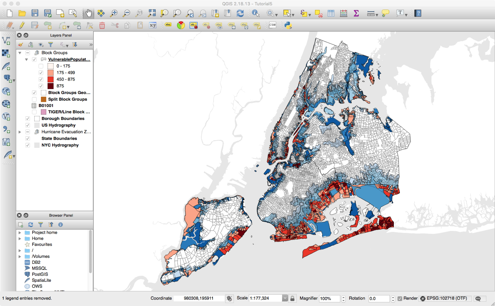
While this is useful for identifying areas to report on--it is probably more helpful to run analysis on our new layers. We will want to know the overall counts of vulnerable population within each hurricane zone.
To calculate the sum of vulnerable population within each hurricane evacuation zone, we need to perform basic statistical anaylsis. In QGIS, select
Toolboxfrom theProcessingtab in the overhead menu. Once selected, a new tab will appear on the right (the processing toolkit). In the processing toolkit, expand the 'QGIS Geoalgorithms' > 'Vector Table Tools' item and selectStatistics by Categories.For
Input vector layer, select the 'VulnerablePopulation' layer. We want the sum of the vulnerable population that's been made proportional to the sub-block groups. Therefore, select 'NEWVUL' for theField to calculate statistics on. Lastly, we want the sums by evacuation zone, so please choose 'hurricane' from theField with categories.
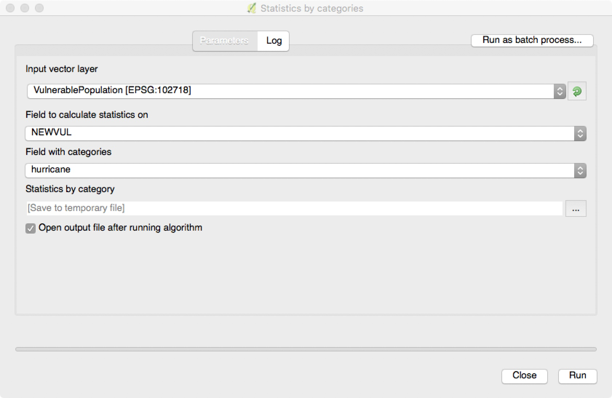
Lastly, we can go to print composer and add these statistics to a map for communication. There are a variety of maps you could make for this type of presentation. For reference, here are a couple examples:
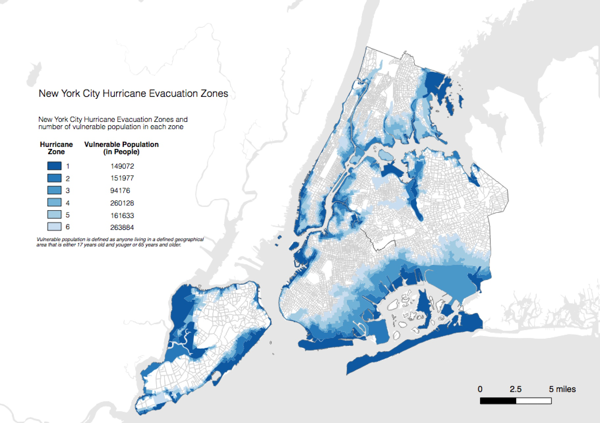
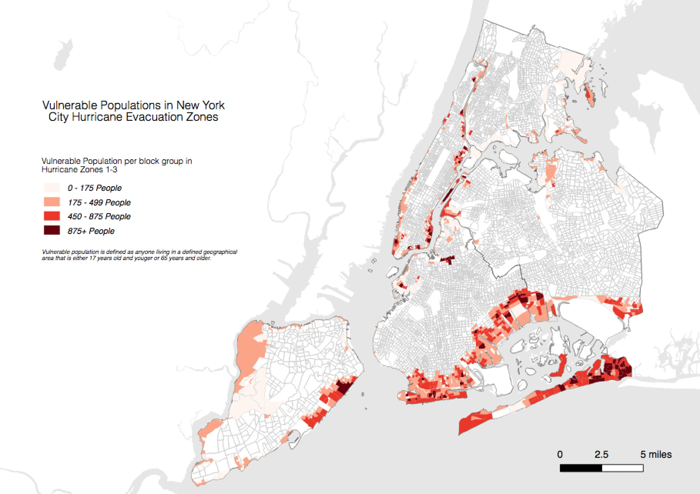
That said, this type of excercise (finding high risk populations in flood evacuation zones) is better served by statistical analysis and csv export than by creating a map for the public.